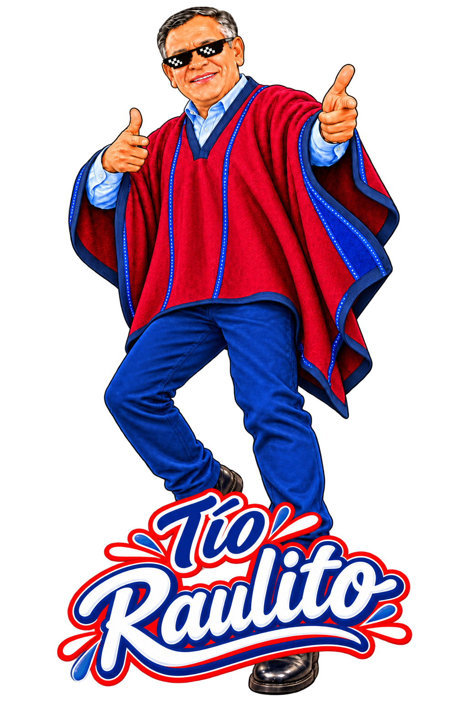
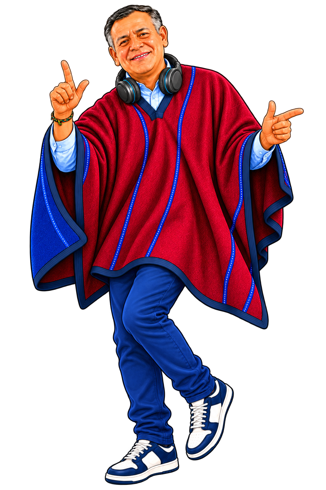
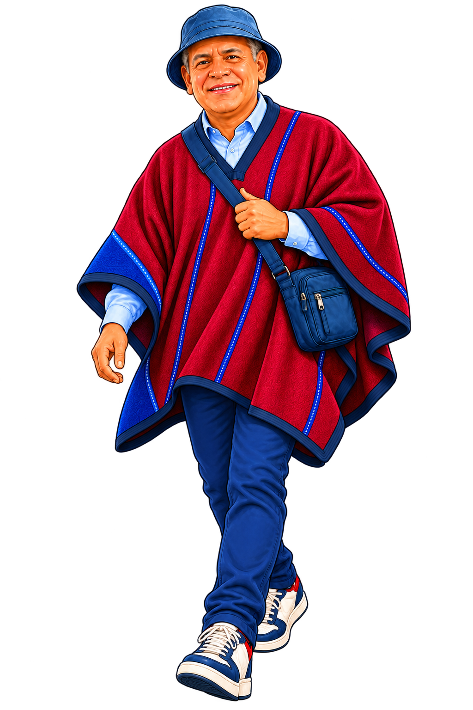
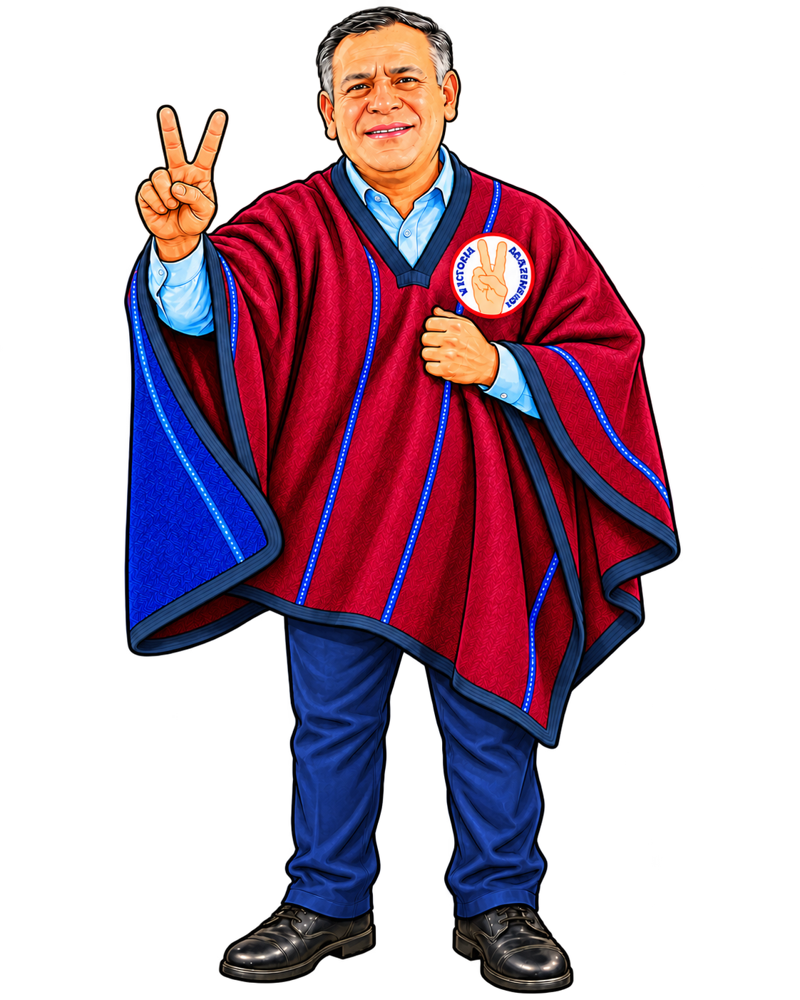

Más oportunidades
Empleo, formación técnica y emprendimiento.
Chachapoyas tiene talento, creatividad y ganas de avanzar. El cambio no se espera: se construye con ideas que se vuelven oportunidades reales.
Descubre qué te mueve ↓
Queremos que Chachapoyas sea un lugar donde estudiar, emprender, trabajar, hacer cultura, practicar deporte y construir un proyecto de vida sea posible. Las decisiones de hoy definen esa ciudad.
Empleo, formación técnica y emprendimiento.
Deporte, cultura, convivencia y espacios públicos.
Turismo, identidad, innovación y creación.
Elige una opción. Toma menos de 10 segundos y descubre qué propuesta conecta más con lo que buscas.
No se trata de prometer de todo. Se trata de priorizar acciones municipales concretas, con resultados visibles para la juventud de Chachapoyas.
Tu talento puede abrir oportunidades. Impulsaremos acceso a formación, capacitación técnica y oportunidades para conectar las ideas jóvenes con empleo, emprendimiento, turismo, cultura e innovación.
Tu voz también decide. Los jóvenes deben proponer, vigilar y participar en las decisiones sobre su barrio, distrito y provincia.
Un municipio que escucha desde tu celular. Canales simples para proponer, reportar, acceder a información y hacer seguimiento a las decisiones municipales.
Más deporte. Más barrio. Más futuro. Espacios para entrenar, compartir y hacer comunidad, con metas concretas para Chachapoyas y distritos de mayor población.
Meta: 05 espacios en Chachapoyas y 02 en distritos de mayor población.
Que nuestra identidad también genere oportunidades. Turismo, cultura, artesanía, gastronomía y creatividad pueden conectarse para abrir oportunidades sin perder lo que nos hace únicos.
Meta: 03 rutas de negocio con pequeños productores.
Cuidar Chachapoyas también es construir futuro. Proteger agua, biodiversidad, paisajes y cultura es una oportunidad para una provincia más sostenible.
Una ciudad que cuida también escucha y acompaña. La municipalidad debe coordinar, prevenir y gestionar mejoras en los servicios que necesita la población.
Incluye la gestión de estudio técnico, expediente aprobado y cofinanciamiento para infraestructura deportiva especializada; no es una obra asegurada.

La juventud está en la ciudad, en los barrios, en los centros poblados y en cada distrito. Conectar territorio, turismo, producción, cultura y oportunidades también es hacer provincia.
Participar no debería ser complicado. Queremos herramientas digitales y espacios presenciales para escuchar ideas, atender demandas y rendir cuentas.

Nuevos espacios público-deportivos en Chachapoyas.
Nuevos espacios en distritos de mayor población.
Rutas de negocio a consolidar con pequeños productores.
Metas del Plan de Gobierno 2027–2030. Su cumplimiento requiere priorización, expediente técnico, presupuesto y articulación institucional según corresponda.
Conoce el Plan de GobiernoImpulsada por la candidatura de Víctor Raúl Culqui Puerta a la Municipalidad Provincial de Chachapoyas, por el Movimiento Regional Victoria Amazonense. Escuchar a los jóvenes no es una foto: es incorporarlos en las decisiones y convertir prioridades en resultados.
El voto joven puede mover Chachapoyas: una decisión informada por Victoria Amazonense.
Con el Tío Raulito, sigamos haciendo historia ✌️
Raúl Culqui · Victoria Amazonense
